Global chrome
Always on the top bar of every primary mode.
| PiDI | Brand. Not a button. |
|---|---|
| < BACK | Previous mode when there is history. |
| HOME | 5×3 launcher for every performance mode (twelve tiles, no scroll). |
| POWER | Shutdown / reboot / SCREEN OFF / blanking timeout. Kiosk-safe — no desktop power UI. |
| SYN SEQ PAD KAO CHD | Jam shortcuts. Visible while you are in those five modes. |
Audio lives in jambox-engine. This UI is a thin client over a Unix socket (or TCP on a host). Recapture after UI changes: ./scripts/capture-pidi-docs.sh.
HOME
Launcher. New screens get a tile here instead of another persistent tab.
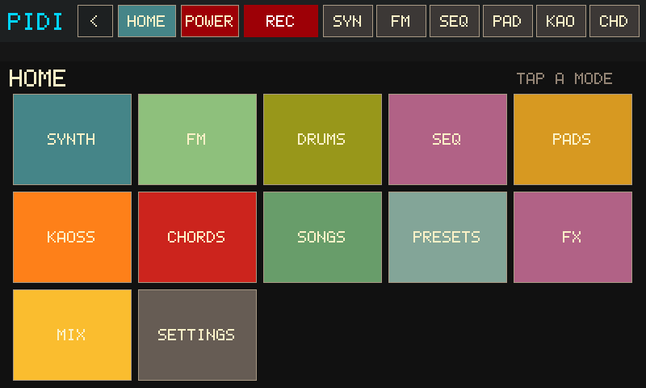
| SYNTH / DRUMS / SEQ / PADS / KAOSS / CHORDS | Performance cluster. SYN SEQ PAD KAO CHD also stay as jam tabs. |
|---|---|
| SONGS | Play Standard MIDI Files locally and/or USB→DIN. |
| PRESETS | Eight named slots for a session snapshot, plus FACTORY. |
| FX | Inserts plus keys vs kit trims. |
| MIX | LIVE / KIT / SEQ buses and per-pad clip faders. |
| SETTINGS | WIFI, UPDATE, FONT, plus tiles through to LOG and MAP. Mix/insert FX live on the FX tile. |
SYNTH
Morphing wavetable voice, CRT scope, on-screen keys.
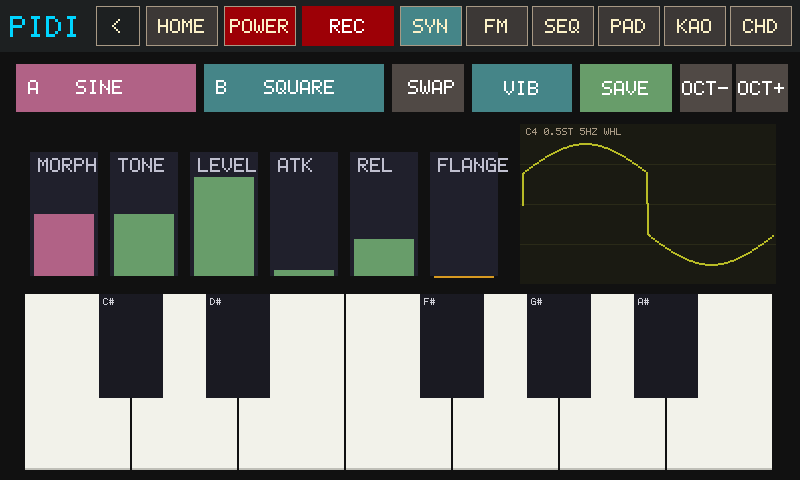
| A / B | Morph endpoints. Tap either to open the MORPH picker for that side. |
|---|---|
| SWAP | Flip A↔B and invert the blend so the sound stays put. |
| VIB | Opens the vibrato overlay (depth, rate, wheel vs always-on). |
| SAVE | Bake the current morph + drive/tone + delay/reverb/flanger sidecar into user-wavetables/. No name pad — it writes an auto name. |
| OCT − / + | Transpose the on-screen keyboard. |
| MORPH TONE LEVEL ATK REL | Vertical sliders. Morph is A→B; tone is the Chamberlin LPF. |
| Scope | Live picture of the morph cycle. |
| Keys | One octave. Notes record into SEQ / pad REC while those are armed. |
MORPH picker
Opened from SYNTH → A or B. One grid assigns both endpoints (A, then B).
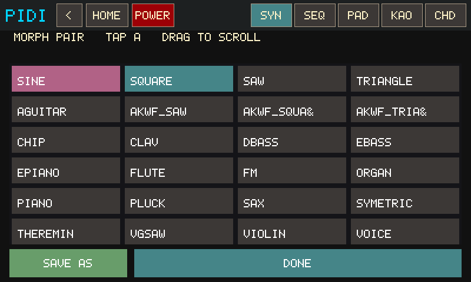
| Voice tiles | Tap to assign the armed side. Drag the grid to scroll the bank (builtins + AKWF + user). |
|---|---|
| SAVE AS | Bake the current blend to a new user wavetable + .fx.json sidecar (includes flanger mix). |
| DONE | Keep the pair and return to SYNTH. |
VIBRATO
Opened from SYNTH → VIB.
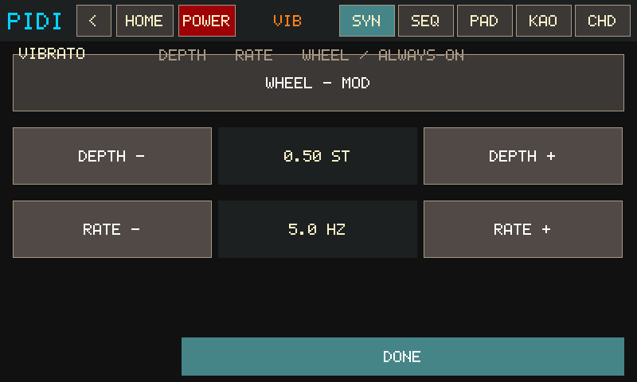
| WHEEL / ON – ALWAYS | Follow CC1 (joystick) or run at the set depth with no wheel. |
|---|---|
| DEPTH − / + | 0–2 semitones. |
| RATE − / + | 1–9 Hz. |
| DONE | Back to SYNTH. |
DRUMS
Its own HOME tile (not a SYNTH overlay). 16 analog-style voices, per-drum note repeat, and WAVE edit.
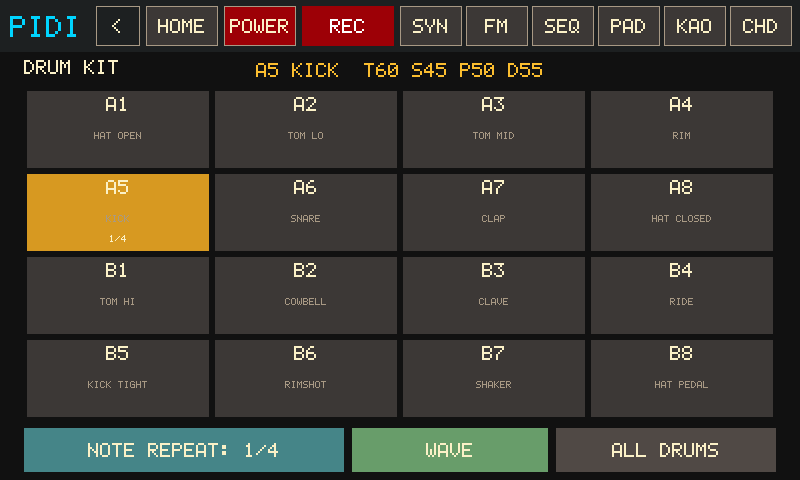
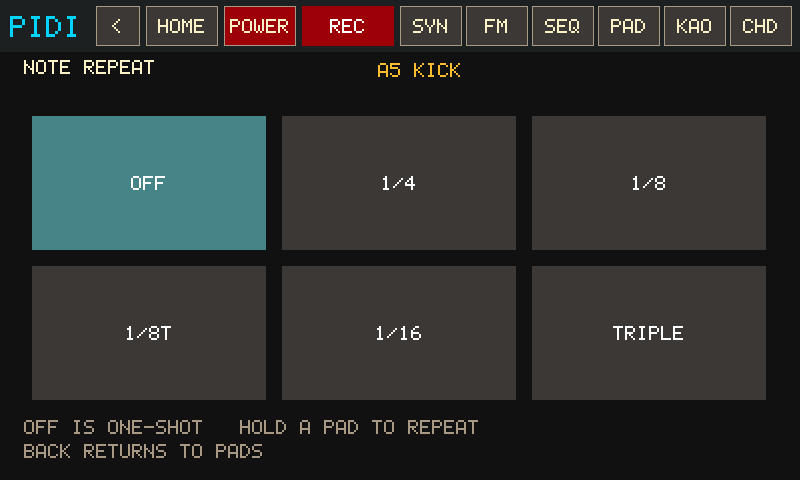
| Pad grid | Tap to play / select. Pads with note repeat show a teal tint plus 1/4 · 1/8 · TRIP. |
|---|---|
| NOTE REPEAT | Per selected drum (or ALL DRUMS). OFF is one-shot; hold a pad to repeat at 1/4, 1/8, 1/8T, 1/16, or TRIPLE. |
| WAVE | Opens the one-shot scope + TONE SNAP PITCH DECAY sliders. |
| ALL DRUMS | Point macros / note repeat / insert FX at the shared kit bus. |
Drum hits record into SEQ / pad REC while those are armed.
SEQ
Free-timing overdub looper. First take is the backbone; later REC stacks layers.
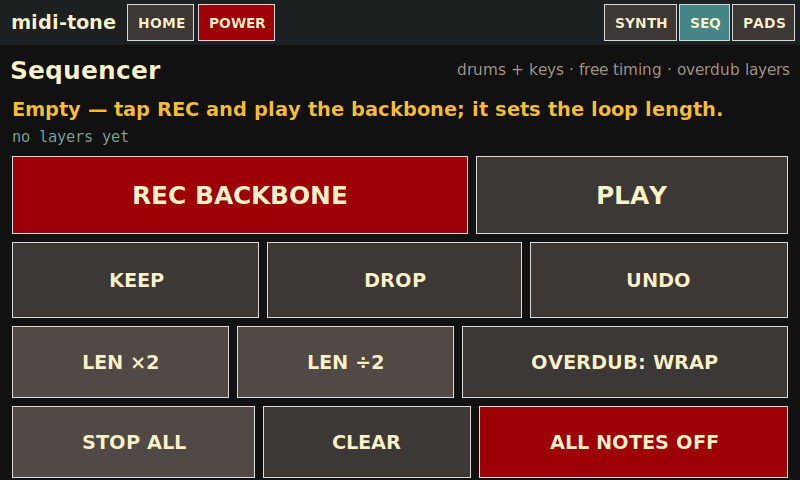
| REC BACKBONE / OVERDUB | First press records the backbone. Press again to lock loop length and play. Later REC is an overdub take. Armed REC also captures SYNTH keys, drums, CHORDS, and incoming MIDI — you can leave SEQ while it records. |
|---|---|
| PLAY | Start playback (needs a backbone). |
| KEEP / DROP / UNDO | Commit, discard, or peel the last layer. |
| LEN ×2 / LEN ÷2 | Double or half the loop. |
| WRAP / EXTEND | WRAP stays inside the length; EXTEND can grow the cycle while overdubbing. |
| >PAD | Arm, then tap a PADS slot to copy the loop onto a phrase. |
| − BPM / + BPM | Tempo. Chrome also shows BPM. |
PADS — PLAY
Launch clips. Empty pads only select; they do not arm record.
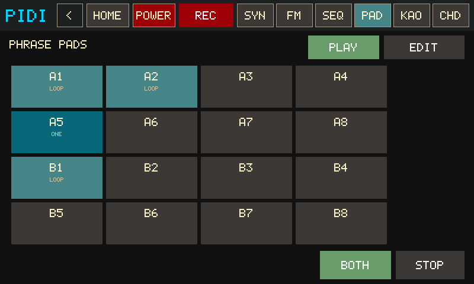
| Grid A1–B8 | Tap a filled pad to launch / toggle. Green = sounding, blue/teal = clip ready, gray = empty. LOOP vs ONE is the subtitle. |
|---|---|
| STOP | Stop every playing phrase. |
| OUT | LOCAL / USB / BOTH (on the edit footer; PLAY keeps routing). |
PADS — EDIT
Record into empty pads and trim per-clip voice / channel / gain.
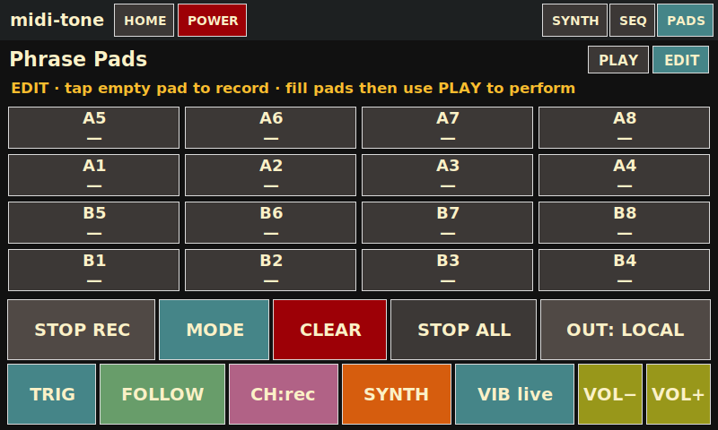
| PLAY / EDIT | Toggle views. |
|---|---|
| REC / STOP | Arm record on the selected empty pad, or finish a take. CHORDS and SYNTH notes land here while REC is on. |
| CLEAR | Arm, then tap a pad to erase it. |
| MODE | Arm, then tap a pad to toggle LOOP ↔ ONE-SHOT. |
| FLW / LOCK | Follow the live morph, or lock a voice snapshot. |
| SYN / MIDI | Local soft-synth vs MIDI-only for that pad. |
| CH* | Force an out channel or keep the recorded one. |
| V− / V+ | Per-pad gain. |
KAOSS
XY pad in the Kaossilator / Kaoss Pad tradition. Scale notes on the onboard synth and/or factory CCs to a hardware synth.
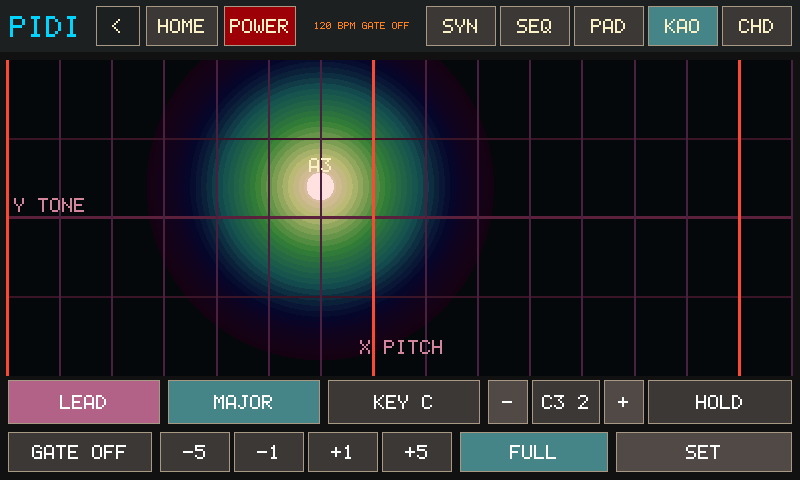
| XY pad | Press / slide / lift. X along the bottom, Y up the left. Default viz is CELLS (12×7 LED field); GLOW is the soft bloom in this capture. Set that in ⚙. |
|---|---|
| PROG / SCALE / KEY / OCT / GATE | Each opens a tap-to-pick grid. GATE arps note programs only. |
| HOLD | Freeze the last XY after lift (Kaossilator-style). On an FX program it also keeps the wet mix. |
| BPM −1 / +1 / −5 / +5 | Gate arp tempo. |
| FULL | Hide the control strip so the pad fills the body. Hold still on the bottom edge (~0.7s) to leave. |
| SET | KAOSS settings (pad FX destination, viz, color, OUT, channel). The button shows the current pad-FX target (SET VOX / SET DRM / SET BOTH). |
Factory MIDI matches the original Kaoss Pad: CC#12 = X, CC#13 = Y, CC#92 = pad touch. Playing while SEQ is recording captures the pad notes.
KAOSS programs
PROG is two families. Note programs play the scale on X. FX programs do not start a note — they sculpt the synth voice (not the drum kit).
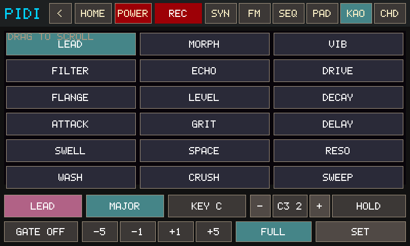
Note programs — X = scale pitch
| LEAD | Y = TONE (sticky LPF). |
|---|---|
| MORPH | Y = MORPH (A→B, sticky). |
| VIB | Y = vibrato depth. Lift restores the previous depth. |
| WAH | Y = tone oscillation rate (auto-wah LFO on the filter). Bottom = slow sweep, top = fast wobble. Lift restores the sticky tone. |
| BEND | Y = pitch bend about the pad midline (center = unison, ±12 st). Curated. |
| LEVEL / DECAY / ATTACK / GRIT / DELAY | Y = volume / release / attack / drive / delay mix. Behind SHOW ALL. |
FX programs — no pitch from the pad
| FILTER | X = TONE, Y = MORPH (momentary unless HOLD). |
|---|---|
| ECHO | X = delay time, Y = delay mix. Lands on the SET pad-FX target (voice / drums / both). |
| DRIVE | X = drive, Y = reverb. Same pad-FX target as ECHO. |
| FLANGE | X = flanger rate, Y = flanger mix. Curated. Latch a note first (LEAD + HOLD), then pick FLANGE. |
| SPACE / RESO / WASH / CRUSH / SWEEP / SWELL | SHOW ALL extras — delay/reverb/drive pairs. Lift restores unless HOLD is on. |
FILTER / FLANGE / ECHO do not play notes. If you open them on an empty pad you hear silence. Latch a sound first, then sculpt. Pad FX follows SET → VOICE / DRUMS / BOTH. For different reverb on keys vs kit, use FX MODE sliders (TARGET: VOICE vs TARGET: DRUMS) — those inserts are independent.
KAOSS scales
Opened from KAOSS → SCALE. Tap a full name instead of cycling three-letter codes.
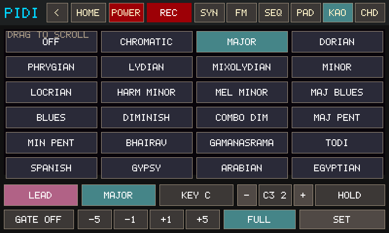
| Scale tiles | Current scale is highlighted. Drag to scroll. |
|---|---|
| CURATED / ALL SCALES | Toggle from KAOSS ⚙ (SHOW ALL). |
KAOSS full pad
Opened from KAOSS → FULL. The pad takes the body of the 800×480 panel; top chrome stays.
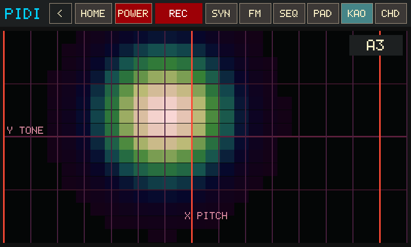
| Pad | Same XY play, just larger. HOLD / gate / viz still apply. |
|---|---|
| Bottom edge | Park a finger on the bottom of the screen and stay still about 0.7s to exit. |
KAOSS settings
Opened from KAOSS → SET. Scroll for OUT and MIDI channel.
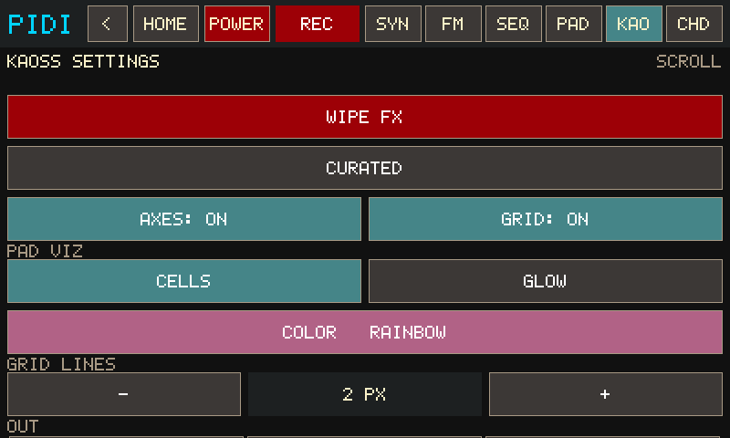
| VOICE / DRUMS / BOTH | Where pad FX (echo, reverb, drive, flange) lands. Default VOICE — kit stays dry. DRUMS writes the shared kit bus. BOTH writes the same XY to both inserts. Different amounts still come from FX MODE sliders. |
|---|---|
| WIPE FX | Zero voice + kit + leftover bus wet and restore tone/morph defaults. |
| CURATED / ALL SCALES | Short vs factory PROG and SCALE lists. |
| AXES / GRID | X/Y labels and grid lines on the pad. |
| PAD VIZ | CELLS (LED matrix) or GLOW (soft bloom). |
| COLOR | Opens the shared color picker (CELLS and GLOW). |
| GRID LINES − / + | Stroke width 1–5 px. |
| OUT / CH | LOCAL / USB / BOTH and MIDI channel 1–16 (scroll down). |
KAOSS pad color
Opened from KAOSS ⚙ → COLOR. Applies to CELLS and GLOW.
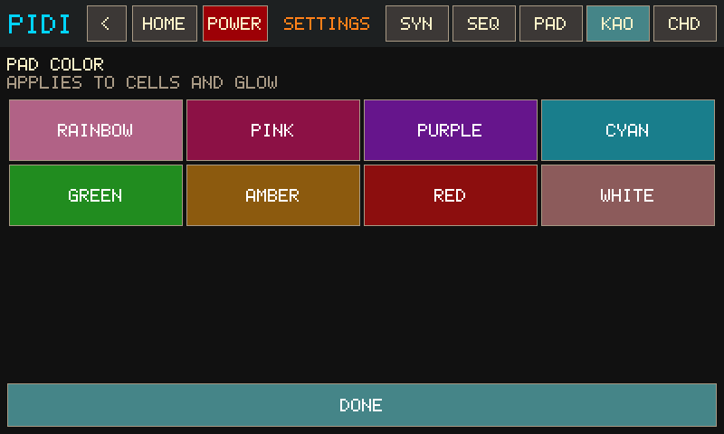
| RAINBOW | Hue follows X. |
|---|---|
| Named swatches | Fixed hue/sat for the field and bloom. |
| DONE | Back to KAOSS settings. |
CHORDS
Omnichord-style circle-of-fifths buttons, harp strumplate, harmonic palette. Jam tab CHD.
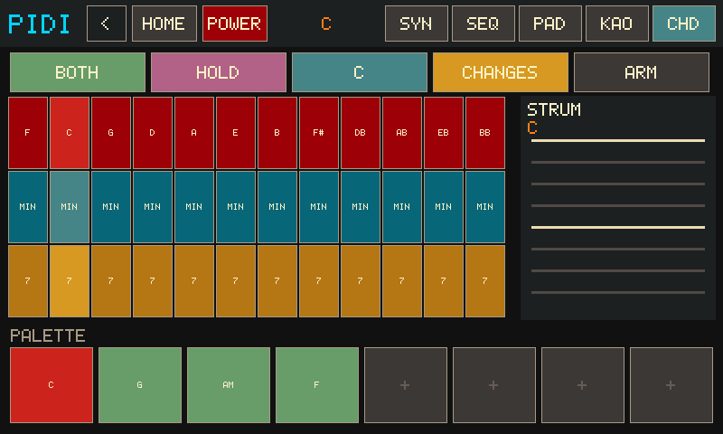
| 12×3 grid | Columns F C G D A E B F# Db Ab Eb Bb. Rows MAJ / min / 7. Same-root and neighbour combos give M7, m7, dim, aug, sus4, add9. Lifting a combo together keeps it on the strum pad — fingers do not have to come up in the same instant. |
|---|---|
| STRUM | Four octaves of the selected chord, low→high. Slide to harp; buttons/palette play a block voicing (piano-style). |
| PALETTE | Eight slots. Empty tap or ARM stores the current chord. Filled press plays that chord as a block (MOM while held, HOLD latches). |
| HOLD / MOM | HOLD keeps the last block chord ringing (memory). MOM only sounds while your finger is down. |
| OUT | LOCAL / USB / BOTH through the current synth voice (or MIDI out). |
| KEY / CHANGES / ARM | Pick the key, load a named progression into the palette, or arm the next empty slot. |
While SEQ REC or pad REC is armed, chrome shows REC {chord} or PAD {chord}. Block chords and strums record the same way synth keys do. Switch to CHD without stopping the take — the sequencer lives on the kiosk, not the page.
CHORDS — CHANGES
Named progressions in the chosen KEY, loaded into the palette.
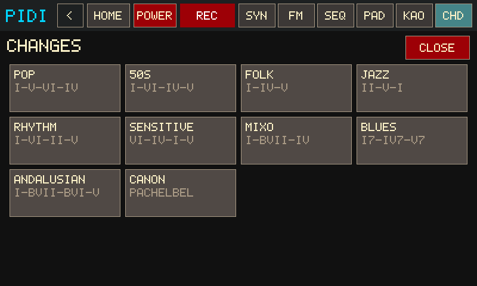
| Pop / 50s / Folk / Jazz | I–V–vi–IV, I–vi–IV–V, I–IV–V, ii–V–I. |
|---|---|
| Rhythm / Sensitive / Mixo / Blues | I–vi–ii–V, vi–IV–I–V, I–bVII–IV, I7–IV7–V7. |
| Andalusian / Canon | i–bVII–bVI–V, Pachelbel. |
| CLOSE | Back without changing the palette. |
CHORDS — KEY
Sets the tonic CHANGES uses when filling the palette.
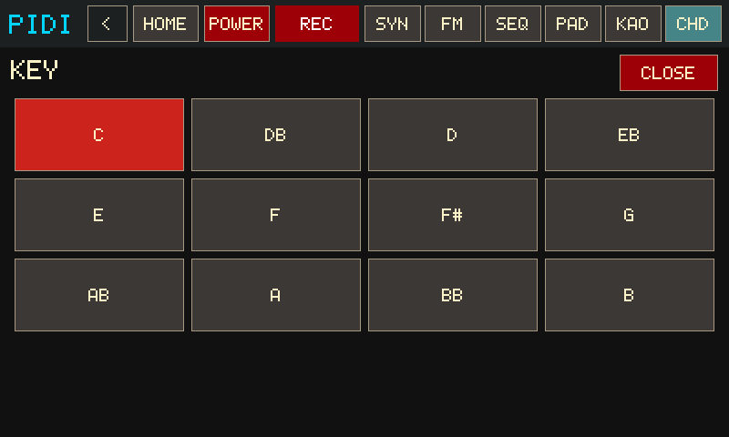
SONGS
Browse songs/ MIDI files, set tempo, play locally and/or USB MIDI out.
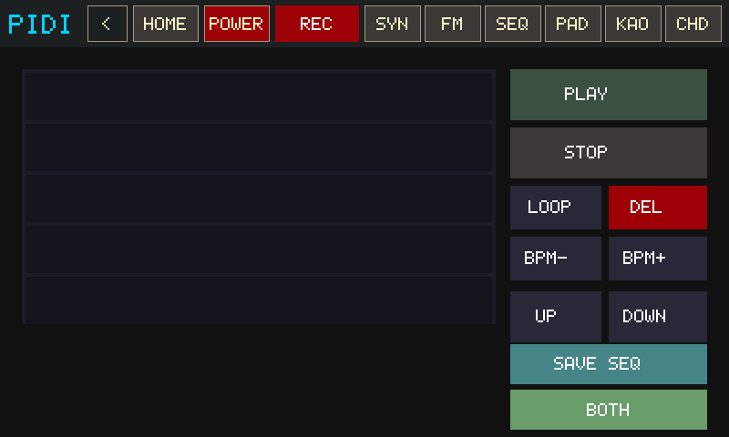
| List + ▲ / ▼ | Tap a .mid row; page with the chunky arrows. |
|---|---|
| PLAY / STOP | Start or stop song playback. |
| SAVE SEQ | Export the current sequencer arrangement into songs/. |
| OUT | LOCAL / USB / BOTH. |
| LOOP | Repeat the file when it ends. |
PRESETS
Eight touch slots for a named session snapshot.
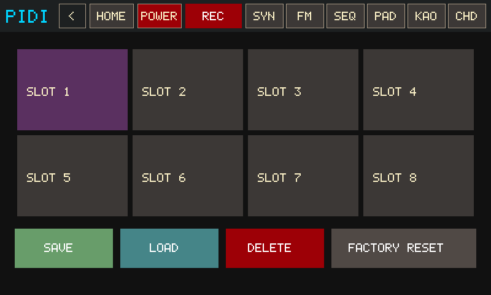
| Slots 1–8 | Tap to select. LOAD / SAVE / DELETE the slot. FACTORY resets synth defaults. |
|---|
Autosave also keeps settings.json so a reboot returns where you left off.
FX
Global mix page. Inserts follow the BUS / VOICE / DRUMS target; LEVEL and DRUMS are always the keys vs kit trims.

| TARGET: BUS / VOICE / DRUMS | Which insert the first four sliders edit. Bus is the master wet after keys + drums are summed. |
|---|---|
| DRIVE DELAY REVERB FLANGE | Insert mix. Voice flange mirrors SYNTH FLANGE; bus flange is independent global wet. |
| LEVEL | Melody / keys bus. Same fader as SYNTH LEVEL. Does not duck the kit. |
| DRUMS | Shared kit bus trim. Balance drums against melodies here without opening DRUM MODE. |
Pad vs pad and SEQ vs live sit on the MIX page. FX stays inserts plus the two live buses.
MIX
First mixer slice: live keys, live kit, the running sequence, and each phrase pad. Clip faders do not rewrite MIDI velocity.
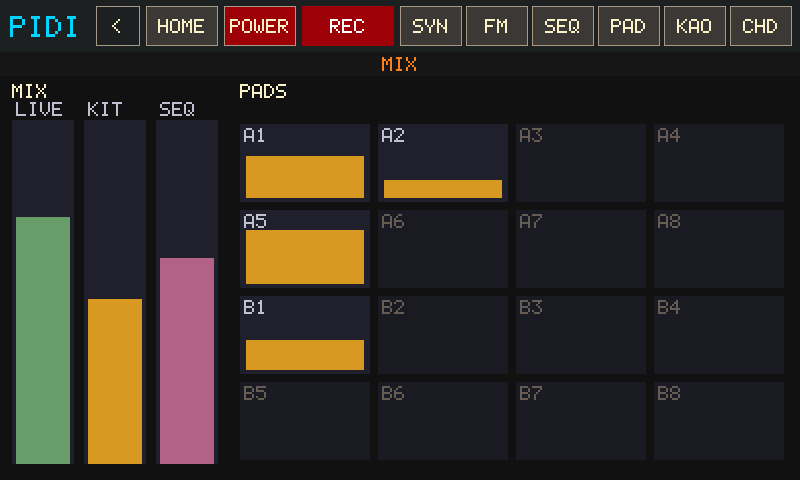
| LIVE | Live keys (KAOSS, SYNTH, CHORDS). Same trim as FX LEVEL / SYNTH LEVEL. |
|---|---|
| KIT | Live drums. Same trim as FX DRUMS. |
| SEQ | The sequence / song clip (engine slot 16). Independent of pad B8. |
| A1–B8 | Per-pad clip gain (0.1–2.0). Empty pads are inert. V− / V+ on PADS EDIT writes the same gain. |
SETTINGS
Appliance hub: panic, audio reopen, Wi‑Fi, font, software update, and doors into LOG / MAP.
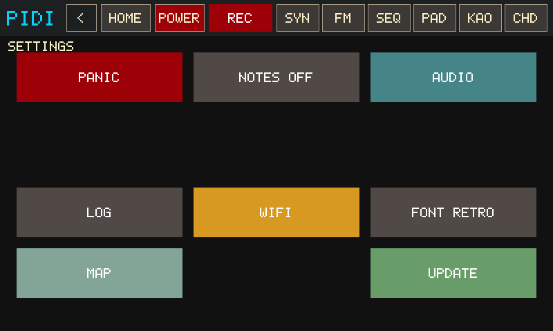
| PANIC / NOTES OFF | Silence everything, or all-notes-off. |
|---|---|
| AUDIO | All-notes-off then reopen the sound device (headphone jack swap). |
| LOG / MAP | Engine log, MIDI thru. |
| WIFI | Join the saved NetworkManager profile or .wifi-credentials. |
| FONT | RETRO bitmap vs SMOOTH TTF. |
| UPDATE | CHECK GitHub master, then overlay the repo and copy committed dist/armv7 onto bin/ (midi-engine, jambox-engine, pidi-native). Does not cargo-build on the Pi. |
LOG
Engine counters plus a short action stream. Opened from SETTINGS → LOG.
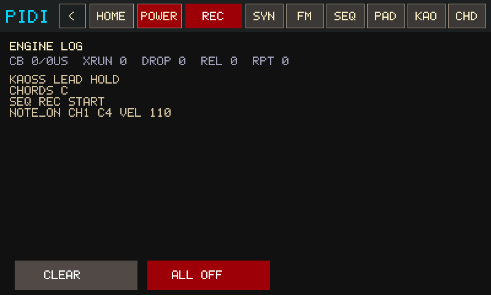
| Counters | Callback frames/µs, xruns, command drops, emergency releases, active repeats. |
|---|---|
| CLEAR / ALL OFF | Wipe the on-screen log, or panic. |
MAP
MIDI thru status. Opens from SETTINGS → MAP. Remap JSON editing is still thinner than the CLI learn workflow.
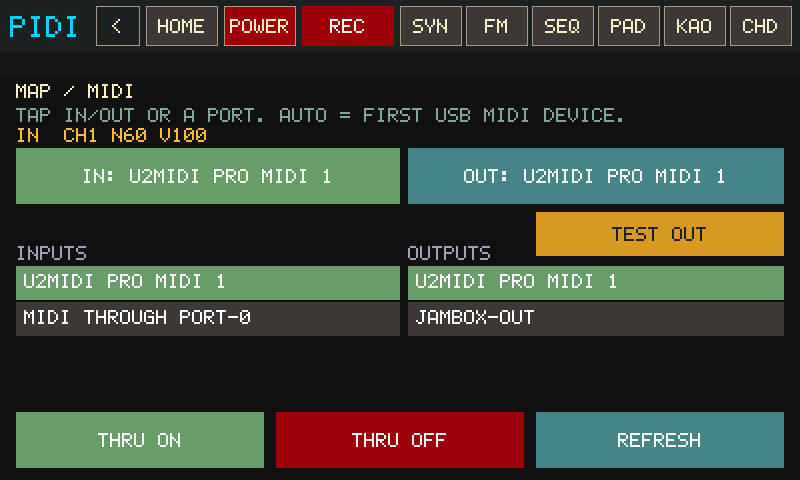
| THRU ON / OFF | Start or stop midi-engine with the active preset. |
|---|---|
| REFRESH PORTS | Re-list USB MIDI devices. |
On a Windows host these actions explain that they belong on the Pi.
POWER
Kiosk-safe power and burn-in controls.
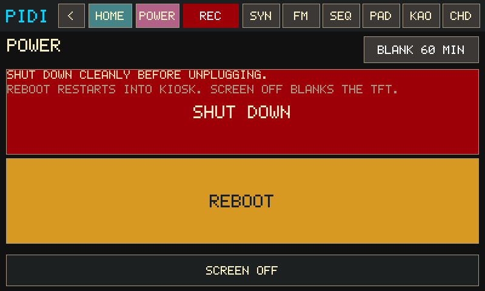
| BLANK timeout | Header control cycles auto-blank (touch-only idle — MIDI does not postpone it). |
|---|---|
| SCREEN OFF | Blank the TFT now. Tap the panel to wake. |
| SHUT DOWN / REBOOT | Power off cleanly, or restart into the kiosk. |
MPK knobs (default mapping)
Factory MPC program (Prog Select → Pad 1) while DRUM MODE / FX targets are off:
| Knob 1 | Morph A→B |
|---|---|
| Knob 2 | Tone / brightness (low-pass) |
| Knob 3 | Attack |
| Knob 4 | Release |
| Knob 5 | Vibrato depth |
| Knob 6 | Vibrato rate |
| Knob 8 | Synth bus level |
FX page LEVEL / DRUMS are the keys vs kit mix (independent of the insert target). Pitch bend and the mod wheel still affect the voice. Joystick Y is CC1 = vibrato.